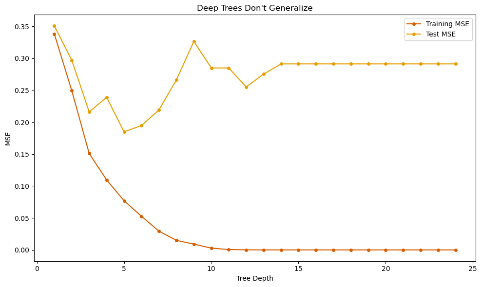
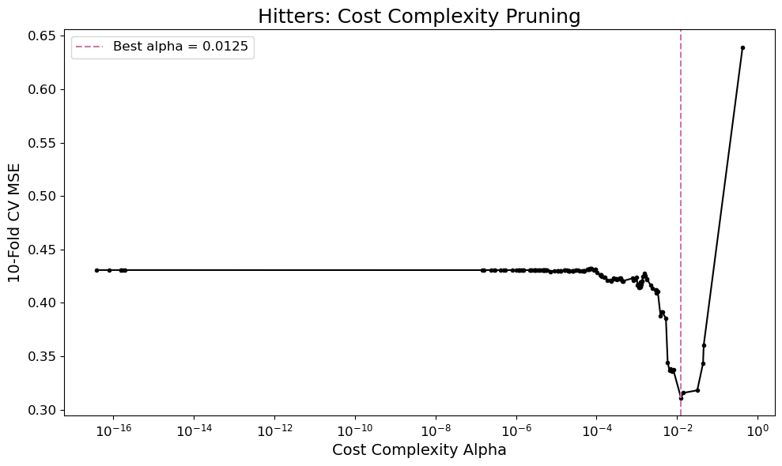
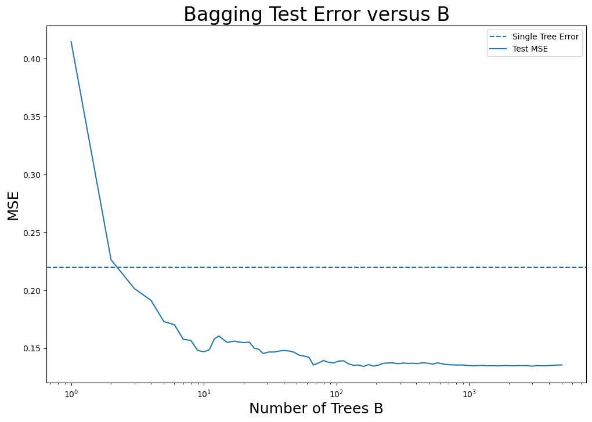
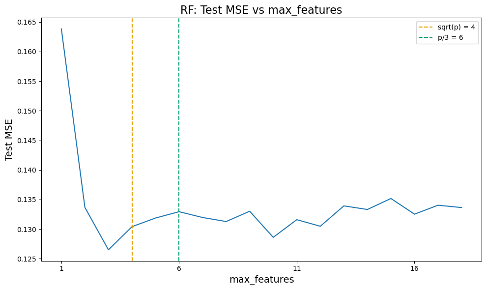
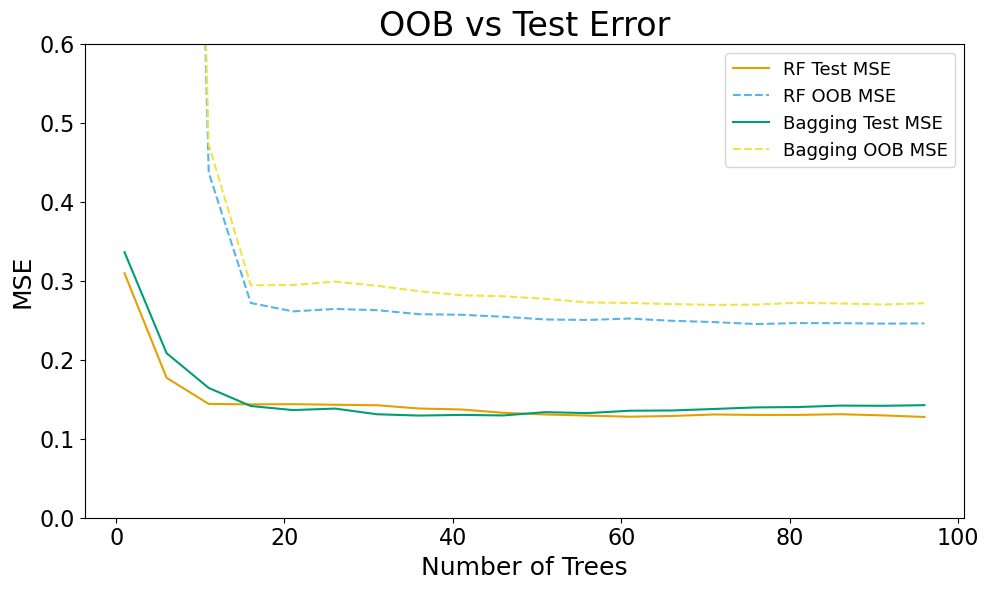
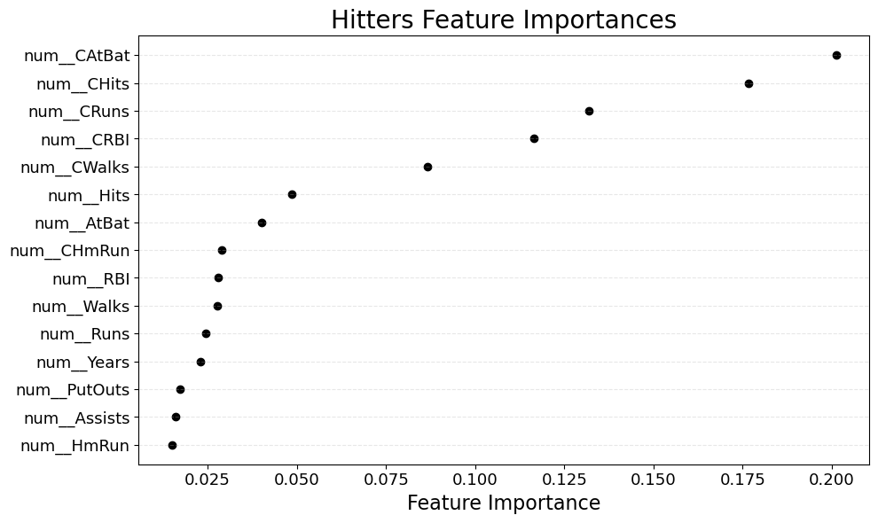
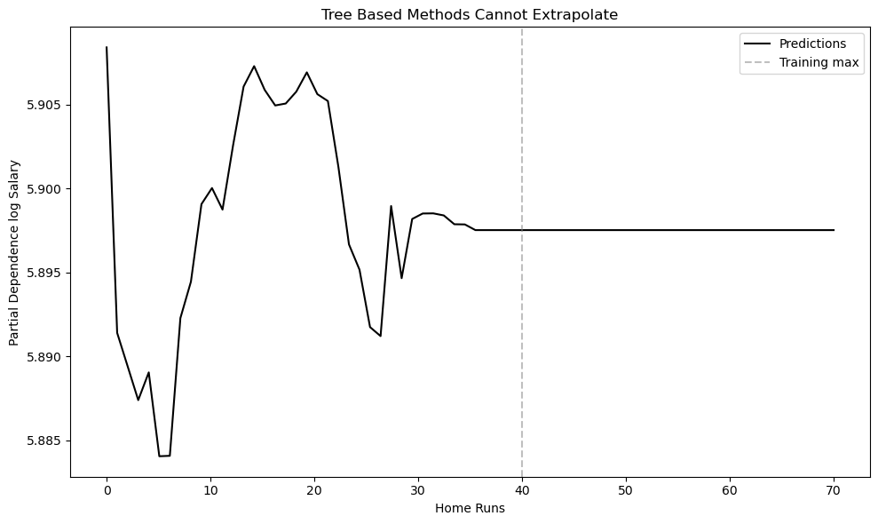

import pandas as pd
import numpy as np
import matplotlib.pyplot as plt
import sklearn.model_selection as skm
from sklearn.tree import (DecisionTreeClassifier as DTC,
DecisionTreeRegressor as DTR,
plot_tree,
export_text)
from sklearn.metrics import (accuracy_score, log_loss)
from sklearn.ensemble import \
(RandomForestRegressor as RF,
RandomForestClassifier as RFC)
from sklearn.metrics import mean_squared_error, r2_score
from sklearn.compose import ColumnTransformer
from sklearn.preprocessing import OneHotEncoder
from matplotlib.pyplot import subplots
from ISLP import load_data
from sklearn.metrics import (accuracy_score, f1_score, matthews_corrcoef,
classification_report, confusion_matrix)
from sklearn.model_selection import cross_val_score
from sklearn.model_selection import GridSearchCV, StratifiedKFold, cross_val_score
okabe_ito = {
"orange": "#E69F00",
"sky_blue": "#56B4E9",
"green": "#009E73",
"yellow": "#F0E442",
"blue": "#0072B2",
"vermilion": "#D55E00",
"pink": "#CC79A7",
"black": "#000000",
}
oi_colors = list(okabe_ito.values())Decision Trees and Random Forest Vignette
Setup and Imports
# Load our data and get rid of points without the target
Hitters = load_data("Hitters").dropna(subset=["Salary"])
X_df = Hitters.drop(columns=["Salary"])
# Best to use log transform here
y_hitters = np.log(Hitters["Salary"].values)
# Train test split
(X_train,
X_test,
y_train,
y_test) = skm.train_test_split(X_df, y_hitters, test_size=0.3, random_state=0)
# The categorical cols are just which league, division, and if the player switched leagues
cat_cols = X_df.select_dtypes(include=["object", "category"]).columns.tolist()
num_cols = X_df.select_dtypes(include=["number"]).columns.tolist()
# One-hot the categoricals, we don't need the standard scaler because
# the features get treated independently
ct = ColumnTransformer([
("cat", OneHotEncoder(drop="first", sparse_output=False), cat_cols),
("num", "passthrough", num_cols),
])
# We will transform everything now
X_train = ct.fit_transform(X_train)
X_test = ct.transform(X_test)
# Get our feature names for plotting
feature_names = ct.get_feature_names_out().tolist()
# We will see how tree depth relates to accuracy in and out of sample
# Here the depths the longest path down the tree, so 25 is highly branched
# We could also limit max_leaf_nodes or min_samples_leaf
depths = range(1, 25)
train_mse = []
test_mse = []
for d in depths:
# Create and fit our tree
tree = DTR(max_depth=d, random_state=0)
tree.fit(X_train, y_train)
# Find the error
train_mse.append(np.mean((y_train - tree.predict(X_train)) ** 2))
test_mse.append(np.mean((y_test - tree.predict(X_test)) ** 2))
# Plot the training and testing error
fig, ax = plt.subplots(figsize=(10, 6))
ax.plot(depths, train_mse, "-o",color=okabe_ito["vermilion"], markersize=4, label="Training MSE")
ax.plot(depths, test_mse, "-o",color=okabe_ito["orange"], markersize=4, label="Test MSE")
ax.set_xlabel("Tree Depth")
ax.set_ylabel("MSE")
ax.set_title("Deep Trees Don't Generalize")
ax.legend()
plt.tight_layout()
plt.show()
# Here we will do some pruning
# First you fit a full tree, the defaults let you go very deep
reg = DTR(random_state=0)
reg.fit(X_train, y_train)
# Now we prune, ccp_path will ratched up alpha from 0, recording the places at which pruning happens
# as well as the pruned sub-tree
ccp_path = reg.cost_complexity_pruning_path(X_train, y_train)
alphas = ccp_path.ccp_alphas
# I put these extra alphas in so that we can see the tree get shrunk all the way to null
#extra_alphas = np.logspace(
# np.log10(alphas[alphas > 0].max()),
# np.log10(alphas[alphas > 0].max()) + 2,
# 50
#)
#alphas_extended = np.concatenate([alphas, extra_alphas])
alphas_extended = alphas
# CV to find best alpha
kfold = skm.KFold(n_splits=10, shuffle=True, random_state=10)
# Setup our grid
grid = skm.GridSearchCV(
DTR(random_state=0), # Model to fit
{"ccp_alpha": alphas_extended}, # regularization parameter
refit=True, cv=kfold, # cv scheme, refit calculates a tree at the end on entire set
scoring="neg_mean_squared_error"
)
# The expensive step where we do the cross validation
G = grid.fit(X_train, y_train)
# Plot CV MSE vs alpha
cv_mses = -G.cv_results_["mean_test_score"]
mask = alphas_extended > 0 # This is because alpha = 0 is undefined on the log scale
fig, ax = plt.subplots(figsize=(10, 6))
ax.plot(alphas_extended[mask], cv_mses[mask], "-o", color="k", markersize=3)
ax.axvline(G.best_params_["ccp_alpha"], color=okabe_ito["pink"], linestyle="--",
label=f"Best alpha = {G.best_params_['ccp_alpha']:.4f}")
ax.set_xscale("log")
ax.set_xlabel("Cost Complexity Alpha", fontsize=14)
ax.set_ylabel("10-Fold CV MSE", fontsize=14)
ax.set_title("Hitters: Cost Complexity Pruning", fontsize=18)
ax.legend(fontsize=12)
ax.tick_params(axis="both", labelsize=12)
plt.tight_layout()
plt.show()
# Want to show an exponential spacing so we can see that the error levels off
bag_vec = np.unique(np.logspace(0, np.log10(5000), 100).astype(int))
train_mse_vec = []
test_mse_vec = []
# We get the pruned single tree that was best from our cross-validation for comparison purposes
single_tree = G.best_estimator_
single_tree_mse = np.mean((y_test - single_tree.predict(X_test)) ** 2)
# You typically don't cross validate the number of bagged trees since it levels off
for j, bag_n in enumerate(bag_vec):
# Fitting a random forest. Remember, it's more standard bagging if you use the default parameters
bag_hitters = RF(max_features=X_train.shape[1], n_estimators = bag_n,random_state=0)
bag_hitters.fit(X_train,y_train)
y_hat_bag_train = bag_hitters.predict(X_train)
train_mse_vec.append(np.mean((y_train-y_hat_bag_train)**2))
y_hat_bag = bag_hitters.predict(X_test)
test_mse_vec.append(np.mean((y_test-y_hat_bag)**2))
# Plot the data
fig, ax = plt.subplots(figsize = (12,8))
ax.axhline(single_tree_mse, linestyle="--",
label=f"Single Tree Error")
ax.plot(bag_vec,test_mse_vec,label="Test MSE")
ax.legend()
ax.set_title("Bagging Test Error versus B",fontsize=24)
ax.set_xscale("log")
ax.set_xlabel("Number of Trees B", fontsize=18)
ax.set_ylabel("MSE", fontsize=18);
# Now we fix the number of trees, and look at how the max_features
# per split varies
bag_n = 500
fig, ax = plt.subplots(figsize=(10, 6))
p = X_train.shape[1]
test_mses = []
# Loop over number of features
for max_features in np.arange(1, p):
rf = RF(max_features=max_features, n_estimators=bag_n, random_state=1)
rf.fit(X_train, y_train)
test_mses.append(np.mean((y_test - rf.predict(X_test))**2))
ax.plot(np.arange(1, p), test_mses)
# These are two common choices of features, classification is sqrt(p), idea is more
# aggresive differentiation of the trees
ax.axvline(int(np.sqrt(p)), color=okabe_ito["orange"], linestyle="--",
label=f"sqrt(p) = {int(np.sqrt(p))}")
ax.axvline(int(p / 3), color=okabe_ito["green"], linestyle="--",
label=f"p/3 = {int(p / 3)}")
ax.set_xlabel("max_features", fontsize=14)
ax.set_ylabel("Test MSE", fontsize=14)
ax.set_title("RF: Test MSE vs max_features", fontsize=16)
ax.set_xticks(np.arange(1, p,5))
ax.legend()
plt.tight_layout()
plt.show()
# In addition to cross-validation error, you can use out of bag error
# to etimate out of sample error. You can see here that it is usually
# too cautious, but quickly converges. We also compare regular bagging to the best RF
# from the previous example
p = X_train.shape[1]
n_trees_vec = np.arange(1, 100, 5)
rf_oob = []
rf_test = []
bag_oob = []
bag_test = []
for n in n_trees_vec:
rf = RF(max_features=3, n_estimators=n, oob_score=True, random_state=1)
rf.fit(X_train, y_train)
rf_oob.append(np.mean((y_train - rf.oob_prediction_) ** 2))
rf_test.append(np.mean((y_test - rf.predict(X_test)) ** 2))
bag = RF(max_features=p, n_estimators=n, oob_score=True, random_state=1)
bag.fit(X_train, y_train)
bag_oob.append(np.mean((y_train - bag.oob_prediction_) ** 2))
bag_test.append(np.mean((y_test - bag.predict(X_test)) ** 2))
fig, ax = plt.subplots(figsize=(10, 6))
ax.plot(n_trees_vec, rf_test, "-", color=oi_colors[0], label="RF Test MSE")
ax.plot(n_trees_vec, rf_oob, "--", color=oi_colors[1], label="RF OOB MSE")
ax.plot(n_trees_vec, bag_test, "-", color=oi_colors[2], label="Bagging Test MSE")
ax.plot(n_trees_vec, bag_oob, "--", color=oi_colors[3], label="Bagging OOB MSE")
ax.set_ylim(0.0,0.6)
ax.set_xlabel("Number of Trees", fontsize=18)
ax.set_ylabel("MSE", fontsize=18)
ax.set_title("OOB vs Test Error", fontsize=24)
ax.legend(fontsize=13)
ax.tick_params(axis="both", labelsize=16)
plt.tight_layout()
plt.show()/home/georgehagstrom/miniforge3/envs/DATA622/lib/python3.11/site-packages/sklearn/ensemble/_forest.py:611: UserWarning: Some inputs do not have OOB scores. This probably means too few trees were used to compute any reliable OOB estimates.
warn(
/home/georgehagstrom/miniforge3/envs/DATA622/lib/python3.11/site-packages/sklearn/ensemble/_forest.py:611: UserWarning: Some inputs do not have OOB scores. This probably means too few trees were used to compute any reliable OOB estimates.
warn(
/home/georgehagstrom/miniforge3/envs/DATA622/lib/python3.11/site-packages/sklearn/ensemble/_forest.py:611: UserWarning: Some inputs do not have OOB scores. This probably means too few trees were used to compute any reliable OOB estimates.
warn(
/home/georgehagstrom/miniforge3/envs/DATA622/lib/python3.11/site-packages/sklearn/ensemble/_forest.py:611: UserWarning: Some inputs do not have OOB scores. This probably means too few trees were used to compute any reliable OOB estimates.
warn(
/home/georgehagstrom/miniforge3/envs/DATA622/lib/python3.11/site-packages/sklearn/ensemble/_forest.py:611: UserWarning: Some inputs do not have OOB scores. This probably means too few trees were used to compute any reliable OOB estimates.
warn(
/home/georgehagstrom/miniforge3/envs/DATA622/lib/python3.11/site-packages/sklearn/ensemble/_forest.py:611: UserWarning: Some inputs do not have OOB scores. This probably means too few trees were used to compute any reliable OOB estimates.
warn(
# Lastly, feature importance. This measures for each feature, how much of the error reduction
# comes from splits made at that feature.
# Fit a regression tree
RF_Hitters = RF(max_features=int(p/3), n_estimators=500, random_state=1)
RF_Hitters.fit(X_train, y_train)
# Make the feature importance into a data frame and sort it
feature_imp = pd.DataFrame(
{'importance': RF_Hitters.feature_importances_},
index=feature_names
).sort_values(by='importance', ascending=False)
fig, ax = plt.subplots(figsize=(10, 6))
num_features = 15
top_features = feature_imp.head(num_features)
ax.scatter(top_features, range(num_features), color='k')
ax.invert_yaxis()
ax.set_xlabel("Feature Importance", fontsize=16)
ax.set_yticks(range(num_features))
ax.set_yticklabels(top_features.index)
ax.grid(axis='y', linestyle='--', alpha=0.3)
ax.set_title("Hitters Feature Importances", fontsize=20)
ax.tick_params(axis="both", labelsize=13)
plt.tight_layout()
plt.show()
# This is the partial dependence plot
# We are going to first pick a feature, will do Home Runs
HMRun_idx = feature_names.index("num__HmRun")
grid_values = np.linspace(0, 70, 70)
fig, ax = plt.subplots(figsize=(10, 6))
# pdp_values will store the predictions
pdp_values = []
for val in grid_values:
# We create a new dataframe
X_temp = X_train.copy()
# Replace every value of the homeruns with our grid value
X_temp[:, HMRun_idx] = val
# Generate predictions using our model and take the average
pdp_values.append(RF_Hitters.predict(X_temp).mean())
# Plot
ax.plot(grid_values, pdp_values, color="k", label="Predictions")
ax.axvline(X_train[:, HMRun_idx].max(), color="gray", linestyle="--",
alpha=0.5, label=f"Training max")
ax.set_xlabel("Home Runs")
ax.set_ylabel("Partial Dependence log Salary")
ax.set_title("Tree Based Methods Cannot Extrapolate")
ax.legend()
plt.tight_layout()
plt.show()